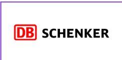
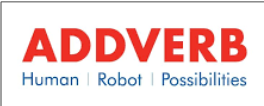

Work History
A quick look at where I've worked and what these companies do.
A global energy technology company spun off from GE, focused on electrification and decarbonization, spanning power generation, grid technology, wind, and energy storage (BESS) solutions for utilities and industrial customers.

One of the world's largest logistics providers, operating across land transport, air and ocean freight, and contract logistics for B2B customers globally.
The Indian multinational subsidiary of Thyssenkrupp, delivering industrial engineering, automation, and energy solutions across process industries, robotics, and infrastructure projects.

A robotics and warehouse-automation company building autonomous mobile robots and material-handling systems for large-scale logistics and manufacturing operations.